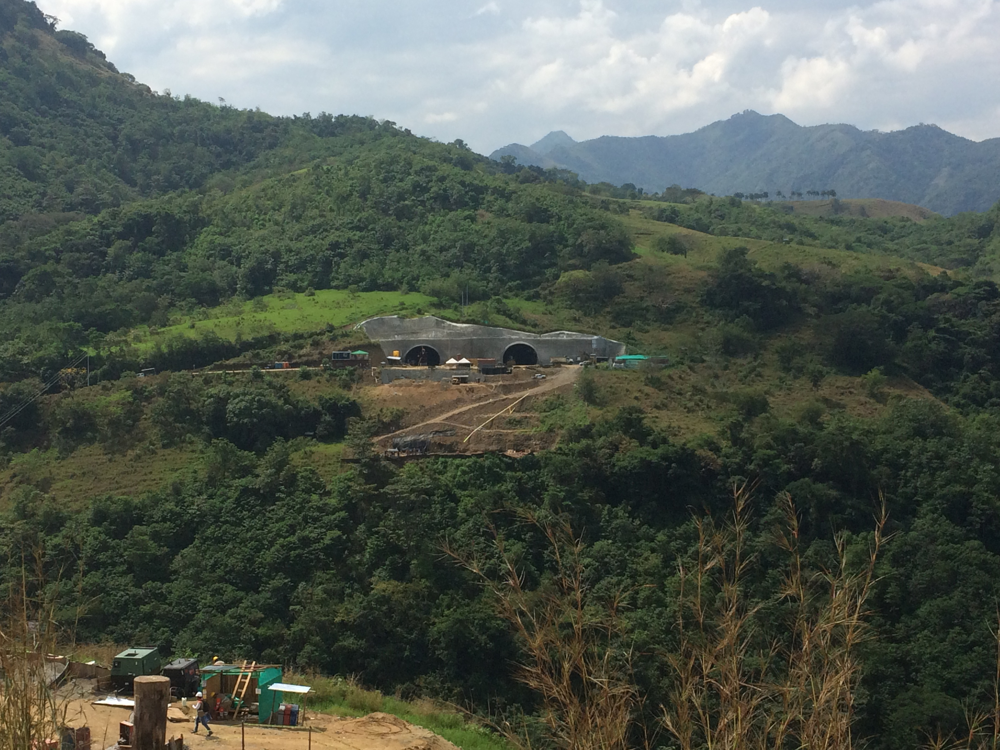

<div class="grid animated fadeIn">
    <figure class="effect-ming">
        
        <figcaption>
            <h2>TUNEL MULATOS (PACIFICO 2) - CONSORCIO SUROESTE</h2>
            <p>Chequeo de poligonal de amarre, marcación y replanteo de frente, levantamiento de secciones transversales, dibujo y calculo de volúmenes, escaneo 3D de tunel.</p>
            <a href="#">View more</a>
        </figcaption>
    </figure>
</div>